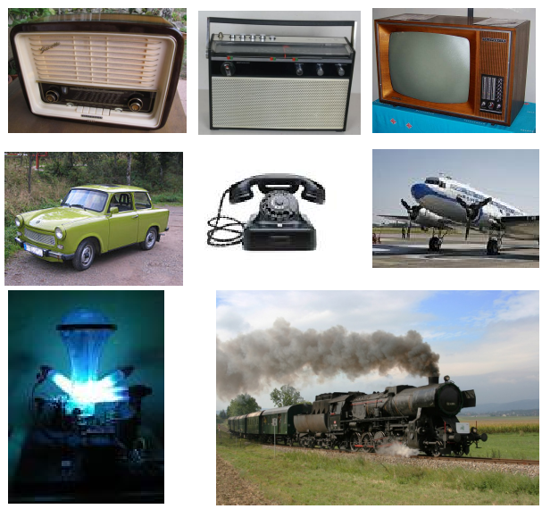

A presentation by Zsolt Kazsi
Excess & obsolete components
VS.
Component obsolescence - long term availability
...resulting in obsolescence of the components
"The loss or impending loss of manufacturers of items or suppliers of items or raw materials."
Reactive (fire fighting) or preventive (fire prevention)
EMS Partner: strongest worldwide
Long term reliable solution required
Sales: basis for success: 4 projects today (CH, UK, FI)
Supplier: less discussion about scope
Press B or . on your keyboard to pause the presentation. This is helpful when you're on stage and want to take distracting slides off the screen.